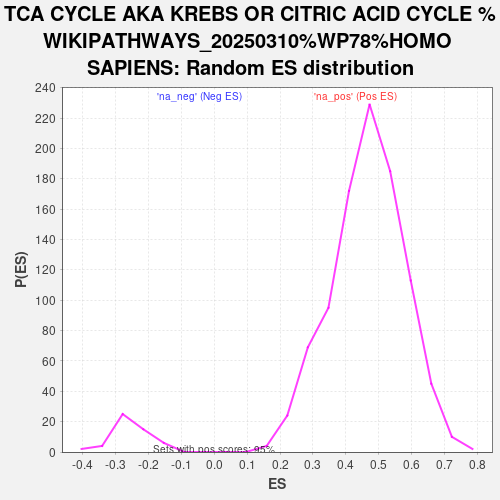

| | | Dataset | ranked_genes |
| Phenotype | NoPhenotypeAvailable |
| Upregulated in class | na_neg |
| GeneSet | TCA CYCLE AKA KREBS OR CITRIC ACID CYCLE %WIKIPATHWAYS_20250310%WP78%HOMO SAPIENS |
| Enrichment Score (ES) | -0.8632945 |
| Normalized Enrichment Score (NES) | -3.3644388 |
| Nominal p-value | 0.0 |
| FDR q-value | 0.0 |
| FWER p-Value | 0.0 |
Table: GSEA Results Summary
 Fig 1: Enrichment plot: TCA CYCLE AKA KREBS OR CITRIC ACID CYCLE %WIKIPATHWAYS_20250310%WP78%HOMO SAPIENS
Fig 1: Enrichment plot: TCA CYCLE AKA KREBS OR CITRIC ACID CYCLE %WIKIPATHWAYS_20250310%WP78%HOMO SAPIENS
Profile of the Running ES Score & Positions of GeneSet Members on the Rank Ordered List
| SYMBOL | RANK IN GENE LIST | RANK METRIC SCORE | RUNNING ES | CORE ENRICHMENT | | 1 | IDH3A | 9357 | 0.740 | -0.4820 | No |
| 2 | CS | 13632 | 0.033 | -0.7142 | No |
| 3 | SUCLA2 | 13789 | 0.016 | -0.7221 | No |
| 4 | SUCLG2 | 14064 | -0.013 | -0.7365 | No |
| 5 | SDHC | 16387 | -0.521 | -0.8430 | Yes |
| 6 | SDHD | 16538 | -0.572 | -0.8288 | Yes |
| 7 | DLD | 16959 | -0.777 | -0.8214 | Yes |
| 8 | SUCLG1 | 17545 | -1.178 | -0.8073 | Yes |
| 9 | DLST | 17713 | -1.363 | -0.7632 | Yes |
| 10 | OGDH | 17723 | -1.376 | -0.7099 | Yes |
| 11 | FH | 17809 | -1.486 | -0.6565 | Yes |
| 12 | ACO2 | 17902 | -1.632 | -0.5977 | Yes |
| 13 | SDHB | 17946 | -1.718 | -0.5330 | Yes |
| 14 | IDH3G | 18039 | -1.903 | -0.4636 | Yes |
| 15 | IDH3B | 18083 | -2.022 | -0.3870 | Yes |
| 16 | MDH2 | 18191 | -2.391 | -0.2994 | Yes |
| 17 | SDHA | 18200 | -2.443 | -0.2044 | Yes |
| 18 | IDH2 | 18327 | -5.413 | 0.0002 | Yes |
Table: GSEA details [plain text format]

Fig 2: TCA CYCLE AKA KREBS OR CITRIC ACID CYCLE %WIKIPATHWAYS_20250310%WP78%HOMO SAPIENS: Random ES distribution
Gene set null distribution of ES for TCA CYCLE AKA KREBS OR CITRIC ACID CYCLE %WIKIPATHWAYS_20250310%WP78%HOMO SAPIENS